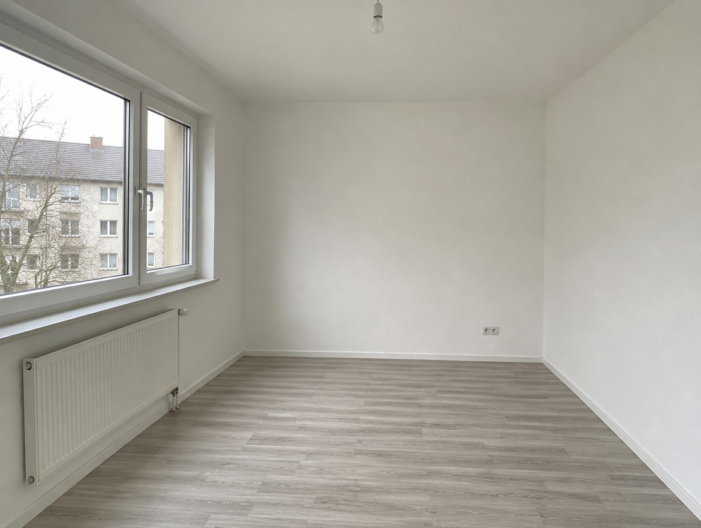
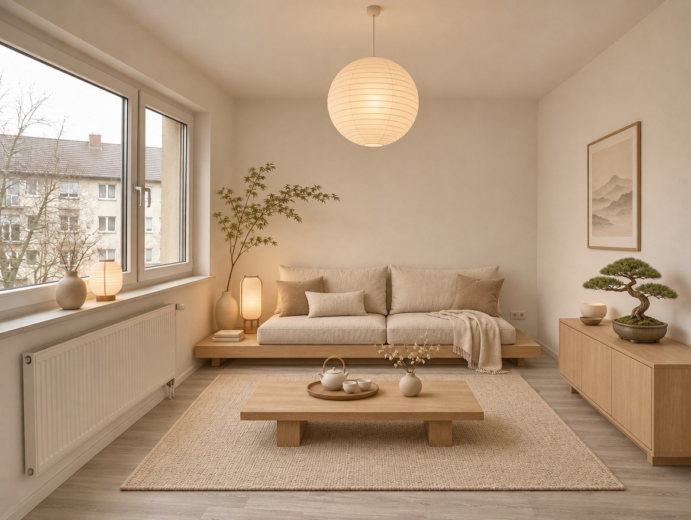
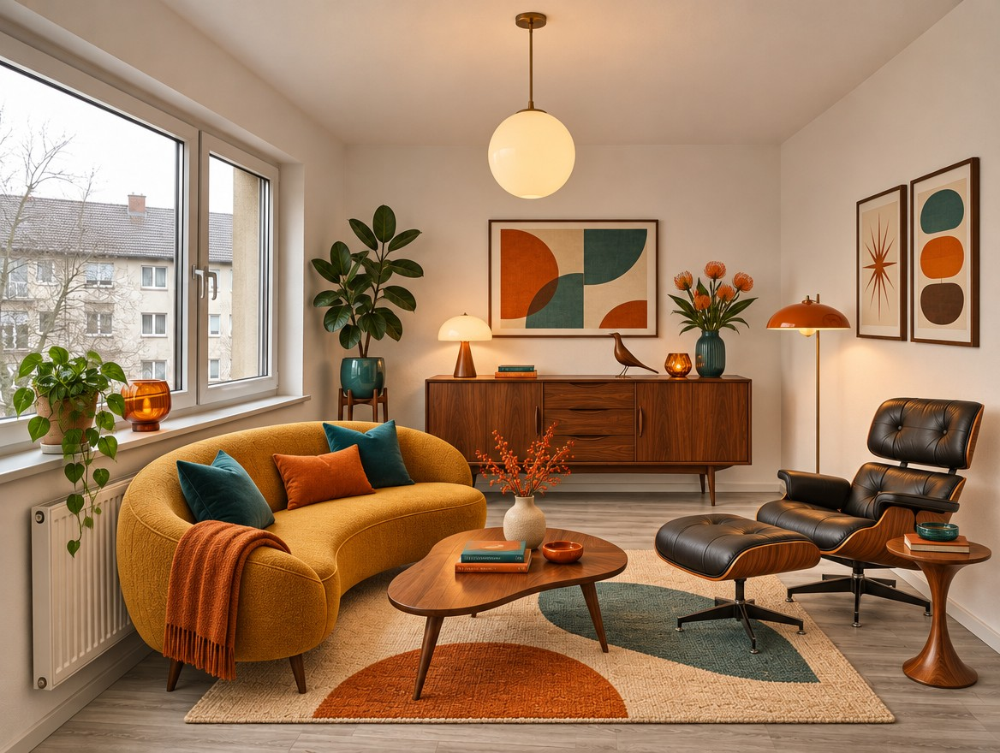
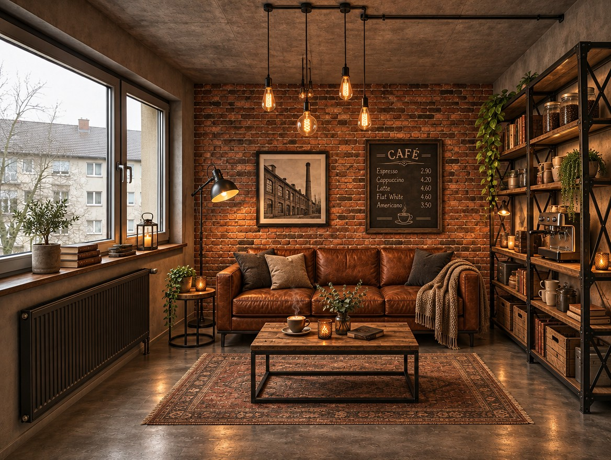
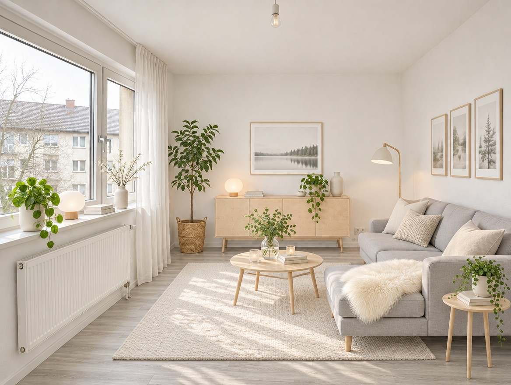
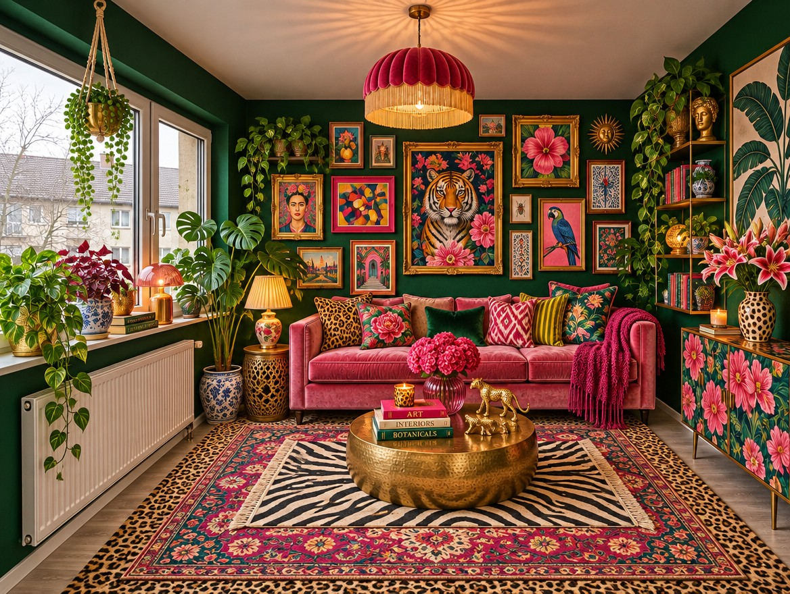

AI 문방구 · 같은 방 인테리어 5
같은 빈방
스타일 이름만 바꿨어요
댓글로 신청해주셔서 고마워요. 영상 속 사진은 전부 힉스필드(GPT Image 2.6)에 빈방 사진 한 장을 참조로 넣고 스타일 이름만 바꿔 만든 결과예요. 이사·셀프 인테리어 전에 미리 그려보세요.
BASE원본 사진 (전)

an empty small apartment room with plain white walls, light grey floor, one large window, wide angle eye level
01Japandi
원목과 리넨
일본식 절제에 북유럽 실용을 섞은 스타일이에요. 좁은 방도 차분해 보여요.
전

후Same room, same window and same camera angle as the reference. Furnish it in Japandi style: low light oak furniture, linen cushions, paper lantern, beige and warm white tones
02Mid-century modern
곡선 가구와 따뜻한 색
1950~60년대 가구 느낌이에요. 월넛과 머스터드가 포인트예요.
전

후Same room, same window and same camera angle as the reference. Furnish it in mid-century modern style: walnut sideboard, curved mustard sofa, lounge chair, globe pendant
03Industrial
철제와 벽돌
카페나 작업실 같은 분위기가 나요. 벽 마감까지 바꿔줘요.
전

후Same room, same window and same camera angle as the reference. Restyle it industrial: exposed red brick wall, black metal shelving, leather sofa, Edison bulb pendants
04Scandinavian
하얀 벽과 밝은 나무
방이 넓어 보이는 가장 무난한 선택이에요.
전

후Same room, same window and same camera angle as the reference. Furnish it in Scandinavian style: white walls, light birch furniture, light grey sofa, plants, airy and bright
05Maximalism
색과 패턴 가득
벽색·러그·액자를 가득 채워 개성을 살려요.
전

후Same room, same window and same camera angle as the reference. Restyle it maximalist: deep green walls, layered patterned rugs, velvet sofa, colorful gallery wall, lots of plants
HOW내 사진으로 하는 법
내 방 사진을 올리고 아래 문장에서 스타일 이름만 바꾸면 돼요. "Same room, same window and same camera angle"을 넣어야 창문 위치와 구도가 그대로 남아요.
Same room, same window and same camera angle as the reference. Furnish it in [스타일 이름] style